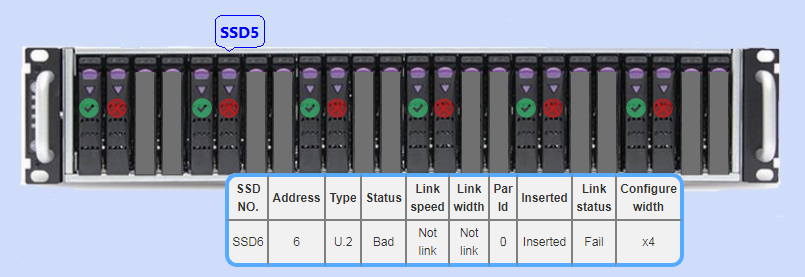

Inventory
Inventory page is the AFA WEB home page. This page shows the main AFA information, when mouse move to different position of the images, can get more info of hardware devices, move off from the table, information disappears. For example, when mouse move on SSD3, it indicates current position SSD not inserted. The table shows its information and move off from the table, information disappears.

When mouse moves on SSD4, it indicates current position SSD inserted and status ok. The table shows its information

When mouse move on SSD5, it indicates current position SSD inserted but status bad. The table shows its information.


when mouse moves to different position of picture, corresponding information will pop up. Attention, when iocca BMC is local, ioccb BMC is peer. On the contrary, ioccb BMC is local, iocca BMC is peer. Only peer BMC has information, local BMC has nothing.